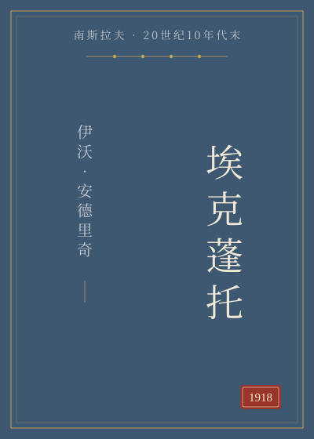
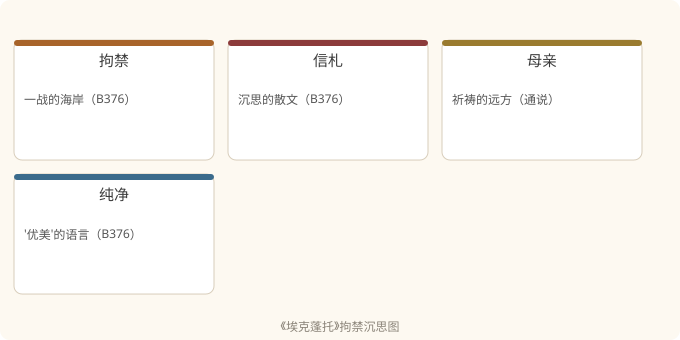

埃克蓬托
一、基本信息
| 作者 | 伊沃·安德里奇 |
|---|---|
| 成书/出版 | 1918年（Britannica B376：Ex Ponto (1918)——'a contemplative, lyrical prose work written during his internment by Austro-Hungarian authorities'） Ivo Andric — Encyclopaedia Britannica（百科全书） |
| 国别/地区 | 南斯拉夫 |
| 时代 | 近代 · 20世纪10年代末 |
| 体裁 | 散文诗集 |
| 语言 | 塞尔维亚-克罗地亚语 |

《埃克蓬托》拘禁沉思图（主题·结构图）
二、创作背景
Britannica（B376）：Ex Ponto——'a contemplative, lyrical prose work written during his internment by Austro-Hungarian authorities'（一战奥匈拘禁期的沉思散文）。
Britannica（B376）：'His works are written soberly, in language of great beauty and purity.'
题材（通说待核）：拘禁期的信札式散文——母亲的祈祷与'波'的意象。
三、内容脉络
（通说待核）拘禁中的信札：致母亲与故人。
（通说待核）'埃克蓬托'：海之外的罗马地名（通说待核）。
四、主要人物表
| 人物 | 身份 | 说明 |
|---|---|---|
| 拘禁者'我' | 写信人 | （B376 语境） |
五、主题与艺术特点
- 拘禁的沉思（B376：contemplative, lyrical）。
- '优美纯净的语言'（B376）。
- 母与海的意象（通说待核）。
六、影响与评论
- Britannica：'a contemplative, lyrical prose work'（B376）。
Ivo Andric — Encyclopaedia Britannica（百科全书） - Britannica：1961诺奖（B376 交叉）。
Ivo Andric — Encyclopaedia Britannica（百科全书）
七、阅读建议
难点
- 信札散文的文体。
- 一战拘禁史。
- 《埃克蓬托》中译名（《异乡人》）待核。
- 塞尔维亚-克罗地亚语原版（公有领域）。
安德里奇起点；与《德里纳河上的桥》对读。
八、待核实
- '埃克蓬托'地名含义核对（通说）。
- 1918年出版细节待核。
- 信札收件人核对（通说）。